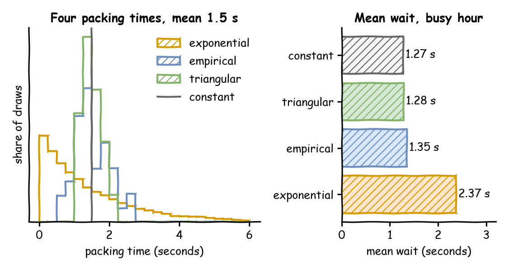

Packing takes 1.5 seconds on average. So far the model has used exactly that: a constant 1.5 seconds. Real packing times vary, and a model's results are only as accurate as the times it draws. This page asks: which distribution fits packing times?
Decision: which candidate distribution the model uses for packing.
Measures: the shape of each candidate beside the measured times, and the busy hour's mean wait with each.
Runs: four runs of the busy hour, one for each candidate, each with the seed 42.
Assumptions: orders arrive at random at 1.8 a second, and the times measured at the bench stand for every packer.
What You Add
This page adds a packing time chosen from evidence. The model simulates the busy hour with 3 packers from Queues and Capacity. It gets four candidates for packing, all with a mean of 1.5 seconds, and runs the hour with each:
constant: the mean alone, as the shop had it;
exponential: the usual choice when nothing is known;
triangular: an expert's estimate;
empirical: times measured at the packing bench.
An Expert's Range
Choosing a distribution for an input is called input modelling. Often there is no data yet, but someone who knows the work can say how long it takes at least, usually and at most. A triangular distribution takes exactly those three numbers, low, mode and high, and all three are required:
# An expert's estimate: at least 1 s, usually 1.25 s, at most 2.25 sTRIANGULAR=DistributionConfig(dist="triangular",low=1,mode=1.25,high=2.25)
Its mean is (low + mode + high) ÷ 3 = (1 + 1.25 + 2.25) ÷ 3 = 1.5 seconds.
Measured Times
When times can be measured, use them. An empirical distribution draws from a list of measured values. Each value is equally likely, unless a weights list gives one weight per value. The 40 packing times below are illustrative: they stand for times taken at the bench, and their mean is 1.5 seconds:
# 40 packing times measured at the bench, in secondsempirical:dist:empiricalvalues:[1.5,2.5,2.4,1.2,1.3,1.2,1.8,1.4,2.0,0.7,2.7,1.4,1.9,1.4,1.3,1.8,2.0,1.4,1.4,1.9,1.1,0.8,1.7,1.1,0.7,1.1,1.2,0.9,0.8,1.5,2.1,1.3,1.1,1.7,1.9,1.3,1.8,2.2,1.4,1.1]
# 40 packing times measured at the bench, in secondsmeasured=[1.5,2.5,2.4,1.2,1.3,1.2,1.8,1.4,2.0,0.7,2.7,1.4,1.9,1.4,1.3,1.8,2.0,1.4,1.4,1.9,1.1,0.8,1.7,1.1,0.7,1.1,1.2,0.9,0.8,1.5,2.1,1.3,1.1,1.7,1.9,1.3,1.8,2.2,1.4,1.1,]# fmt: skipapp.add_service("empirical",dist="empirical",values=measured)
# 40 packing times measured at the bench, in secondsMEASURED=[1.5,2.5,2.4,1.2,1.3,1.2,1.8,1.4,2.0,0.7,2.7,1.4,1.9,1.4,1.3,1.8,2.0,1.4,1.4,1.9,1.1,0.8,1.7,1.1,0.7,1.1,1.2,0.9,0.8,1.5,2.1,1.3,1.1,1.7,1.9,1.3,1.8,2.2,1.4,1.1,]# fmt: skipEMPIRICAL=DistributionConfig(dist="empirical",values=MEASURED)
The values are taken when the model is loaded. A registry path holds one number, and a list is not one number. So an empirical distribution has no registry path, and its values do not change while the run goes on. The other distributions have one path per parameter, such as Shop.service.triangular.mode.
The measured times have a mean of 1.5 seconds and a standard deviation of 0.4832 seconds. A family fitted to them, such as a gamma, takes other parameters: a shape and a scale. desflow dist turns a mean and a standard deviation into them. Save the files from Full Files in one folder and run the commands there:
parameters: shape 9.63671, scale 0.155655
mean 1.5, std 0.4832
variability: low (std / mean 0.322)
with no random generator, every draw is 1.5
YAML: {dist: gamma, shape: 9.63671, scale: 0.155655}
Python: dist="gamma", shape=9.63671, scale=0.155655
The lines after the mean read as follows:
The variability label is desflow's own scale for the standard deviation divided by the mean: none at 0, low below 0.75, moderate from 0.75 to 1.33, and high above 1.33. It is low here, because the standard deviation is about a third of the mean (0.322).
The fourth line is the value a Sampler with no seed gives for every draw. A run always has a seed, so it draws at random and never uses that value. A test can use the value to get the same times on every run, as Arrivals and Services explains.
The last two lines are the service in a blueprint and in the builder.
An exponential has a standard deviation equal to its mean, a ratio of 1, so it is moderate. The arrivals of the busy hour show it. --rate gives the family's own parameter, here 1.8 orders a second:
parameters: rate 1.8
mean 0.555556, std 0.555556
variability: moderate (std / mean 1)
The gap between two orders is 0.56 seconds on average, and its standard deviation is the same 0.56 seconds.
Same Mean, Different Waits
All four candidates have the same mean, so the packers are equally busy with each: utilisation 0.9. Run the hour with each, and read the mean wait from the statistics at the typical level, which Measuring a Run explains:
tasks:pack_order:# The candidate comes from the PACKING variable, empirical when it is not setservice:${PACKING:-empirical}resource:packerspayload:{event_type:order_packed}# The mean wait of pack_order, published at the endstats:{level:typical, interval:1 h}
# The task packs with the candidate; the mean wait is read at the end@app.task(service_id=packing,resource_id="packers")defpack_order(task_id):return{"event_type":"order_packed"}app.with_stats("typical",interval=3600)
defpack_order(env,sampler,packers,packing,task_id):"""One order, packed with the candidate called `packing`."""env.stats.task_queued("pack_order",task_id)withpackers.request()asrequest:yieldrequestenv.stats.task_started("pack_order",task_id)service=env.registry.get_config(f"Shop.service.{packing}")yieldenv.timeout(sampler.sample(service))env.stats.task_finished("pack_order",task_id)
The Builder and Low-level scripts print one line per candidate. The YAML runs print the same numbers as the value of their wait_mean lines:
constant mean wait 1.27 s
triangular mean wait 1.28 s
empirical mean wait 1.35 s
exponential mean wait 2.37 s
A mean alone hides queues. With constant packing nobody holds a packer for long. With exponential packing a few orders take 4, 5 or 6 seconds, and everyone behind them waits: the mean wait almost doubles at the same utilisation.
Result
Which distribution fits packing times? The empirical distribution, because it is the measured times themselves. The chart shows the shapes of the four candidates on the left, and the mean wait each gives in the busy hour on the right:

With the empirical distribution the mean wait is 1.35 seconds, from one run of the hour with the seed 42 and no warm-up, like each figure here. The constant mean gives 1.27 seconds, 6% shorter than with the measured times. The exponential guess gives 2.37 seconds, 75% longer. The expert's triangle is close to the constant, because its range is narrower than the measured one.
Why It Works
In the busy hour the mean wait grows with the spread of the gaps between orders and with the spread of the packing times. Kingman's formula puts it in numbers: the wait is roughly proportional to the square of one spread plus the square of the other, each spread measured relative to its mean. The gaps are the same in all four runs, so only the packing spread differs: none for constant, a little for triangular, more for the measured times, and as much as the mean itself for exponential. Replacing a distribution by its mean, as constant does, is one of the Common Mistakes.
# The Choosing Inputs tutorial: the busy hour with four candidate packing times.# Run it once per candidate, and read the mean wait from the last lines:# PACKING=empirical desflow run choosing_inputs.yaml 2>&1 | grep wait_meansimulation:sim_id:Shopfactor:0random_seed:42resources:packers:{current_cap:3, max_cap:10}arrivals:orders:{dist:exponential, rate:1.8, spawn:pack_order}services:# Four candidates for packing, each with a mean of 1.5 secondsconstant:{dist:constant, value:1.5 s}exponential:{dist:exponential, rate:0.6667}# 1 / 1.5 s# An expert's estimate: at least 1 s, usually 1.25 s, at most 2.25 striangular:{dist:triangular, low:1 s, mode:1.25 s, high:2.25 s}# 40 packing times measured at the bench, in secondsempirical:dist:empiricalvalues:[1.5,2.5,2.4,1.2,1.3,1.2,1.8,1.4,2.0,0.7,2.7,1.4,1.9,1.4,1.3,1.8,2.0,1.4,1.4,1.9,1.1,0.8,1.7,1.1,0.7,1.1,1.2,0.9,0.8,1.5,2.1,1.3,1.1,1.7,1.9,1.3,1.8,2.2,1.4,1.1]tasks:pack_order:# The candidate comes from the PACKING variable, empirical when it is not setservice:${PACKING:-empirical}resource:packerspayload:{event_type:order_packed}# The mean wait of pack_order, published at the endstats:{level:typical, interval:1 h}egress:-type:Consolerun:until:1 h
"""The Choosing Inputs tutorial: the busy hour with four candidate packing times.Each candidate has a mean of 1.5 seconds. The script runs the busy hour once percandidate, unpaced, and prints the mean wait of each run."""fromdesflowimportSimulationContextCANDIDATES=["constant","triangular","empirical","exponential"]defshop(packing:str)->SimulationContext:"""The busy hour with 3 packers, packing with the service called `packing`."""app=(SimulationContext(sim_id="Shop",factor=0,random_seed=42).add_resource("packers",current_cap=3,max_cap=10)# Each order starts the task pack_order.add_arrival("orders",dist="exponential",rate=1.8,spawn="pack_order")# Four candidates for packing, each with a mean of 1.5 seconds.add_service("constant",dist="constant",value=1.5).add_service("exponential",dist="exponential",rate=0.6667)# 1 / 1.5 s)# An expert's estimate: at least 1 s, usually 1.25 s, at most 2.25 sapp.add_service("triangular",dist="triangular",low=1,mode=1.25,high=2.25)# 40 packing times measured at the bench, in secondsmeasured=[1.5,2.5,2.4,1.2,1.3,1.2,1.8,1.4,2.0,0.7,2.7,1.4,1.9,1.4,1.3,1.8,2.0,1.4,1.4,1.9,1.1,0.8,1.7,1.1,0.7,1.1,1.2,0.9,0.8,1.5,2.1,1.3,1.1,1.7,1.9,1.3,1.8,2.2,1.4,1.1,]# fmt: skipapp.add_service("empirical",dist="empirical",values=measured)# The task packs with the candidate; the mean wait is read at the end@app.task(service_id=packing,resource_id="packers")defpack_order(task_id):return{"event_type":"order_packed"}app.with_stats("typical",interval=3600)returnappdefmean_wait(packing:str)->float:"""Runs the busy hour with one candidate and returns the mean wait."""app=shop(packing)app.run(until="1 h")returnapp.env.stats.readings()["Shop.stats.tasks.pack_order.wait_mean"]if__name__=="__main__":forpackinginCANDIDATES:print(f"{packing:<12} mean wait {mean_wait(packing):5.2f} s")
"""The Choosing Inputs tutorial: the busy hour with four candidate packing times.Each candidate has a mean of 1.5 seconds. The script runs the busy hour once percandidate, unpaced, and prints the mean wait of each run."""fromdesflowimport(CapacityConfig,DistributionConfig,DynamicRealtimeEnvironment,DynamicResource,Sampler,SimParameter,)CANDIDATES=["constant","triangular","empirical","exponential"]# An expert's estimate: at least 1 s, usually 1.25 s, at most 2.25 sTRIANGULAR=DistributionConfig(dist="triangular",low=1,mode=1.25,high=2.25)# 40 packing times measured at the bench, in secondsMEASURED=[1.5,2.5,2.4,1.2,1.3,1.2,1.8,1.4,2.0,0.7,2.7,1.4,1.9,1.4,1.3,1.8,2.0,1.4,1.4,1.9,1.1,0.8,1.7,1.1,0.7,1.1,1.2,0.9,0.8,1.5,2.1,1.3,1.1,1.7,1.9,1.3,1.8,2.2,1.4,1.1,]# fmt: skipEMPIRICAL=DistributionConfig(dist="empirical",values=MEASURED)defparams()->SimParameter:"""The busy hour with 3 packers and the four candidates."""returnSimParameter(sim_id="Shop",arrival={"orders":DistributionConfig(dist="exponential",rate=1.8)},# Four candidates for packing, each with a mean of 1.5 secondsservice={"constant":DistributionConfig(dist="constant",value=1.5),"exponential":DistributionConfig(dist="exponential",rate=0.6667),"triangular":TRIANGULAR,"empirical":EMPIRICAL,},resources={"packers":CapacityConfig(current_cap=3,max_cap=10)},)defpack_order(env,sampler,packers,packing,task_id):"""One order, packed with the candidate called `packing`."""env.stats.task_queued("pack_order",task_id)withpackers.request()asrequest:yieldrequestenv.stats.task_started("pack_order",task_id)service=env.registry.get_config(f"Shop.service.{packing}")yieldenv.timeout(sampler.sample(service))env.stats.task_finished("pack_order",task_id)deforder_generator(env,sampler,packers,packing):arrival=env.registry.get_config("Shop.arrival.orders")task_id=0whileTrue:yieldenv.timeout(sampler.sample(arrival))env.process(pack_order(env,sampler,packers,packing,task_id))task_id+=1defmean_wait(packing:str)->float:"""Runs the busy hour with one candidate and returns the mean wait."""env=DynamicRealtimeEnvironment(factor=0)env.registry.register_sim_parameter(params())env.setup_stats("Shop","typical",interval=3600)packers=DynamicResource(env,"Shop","packers")env.process(order_generator(env,Sampler(seed=42),packers,packing))try:env.run(until=3600)finally:env.teardown()returnenv.stats.readings()["Shop.stats.tasks.pack_order.wait_mean"]if__name__=="__main__":forpackinginCANDIDATES:print(f"{packing:<12} mean wait {mean_wait(packing):5.2f} s")